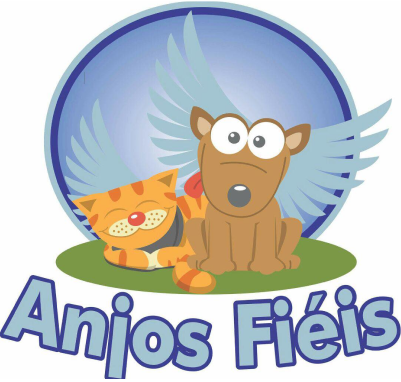

Bem-vindo ao nosso abrigo!
Somos uma organização dedicada a resgatar, cuidar e encontrar novos lares para cães carentes que vivem nas ruas. Nosso objetivo é garantir uma vida digna e cheia de amor para esses animais, promovendo a adoção responsável e a conscientização da comunidade.
Navegue pelas nossas seções para conhecer mais sobre o trabalho que realizamos, os cães disponíveis para adoção e como você pode ajudar.


A ONG atualmente, é bancada e dirigida pela proprietária Giovana, que, com muito amor, cede sua casa, uma chácara, para abrigar cachorros resgatados de maus tratos, abandono e/ou perdidos, eles recebem alimentação, água, vacina e muito carinho. Hoje em dia, ela procura realizar as doações dos pequenos para famílias que zelem pelos animais e que tratem eles como um membro familiar, esse é um dos requisitos principais que Giovana busca nas pessoas, por se importar muito com o futuro e bem-estar dos cães.